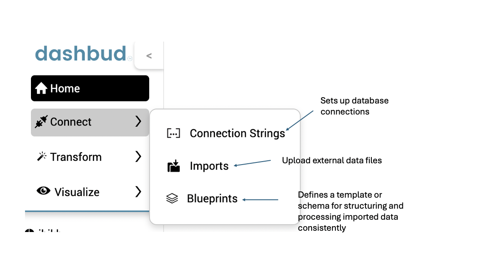
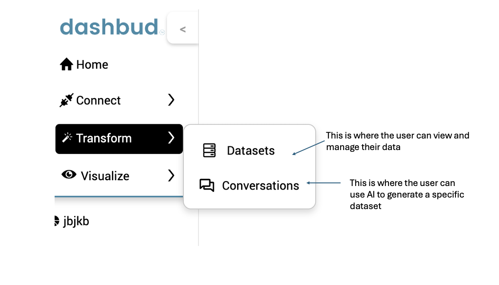
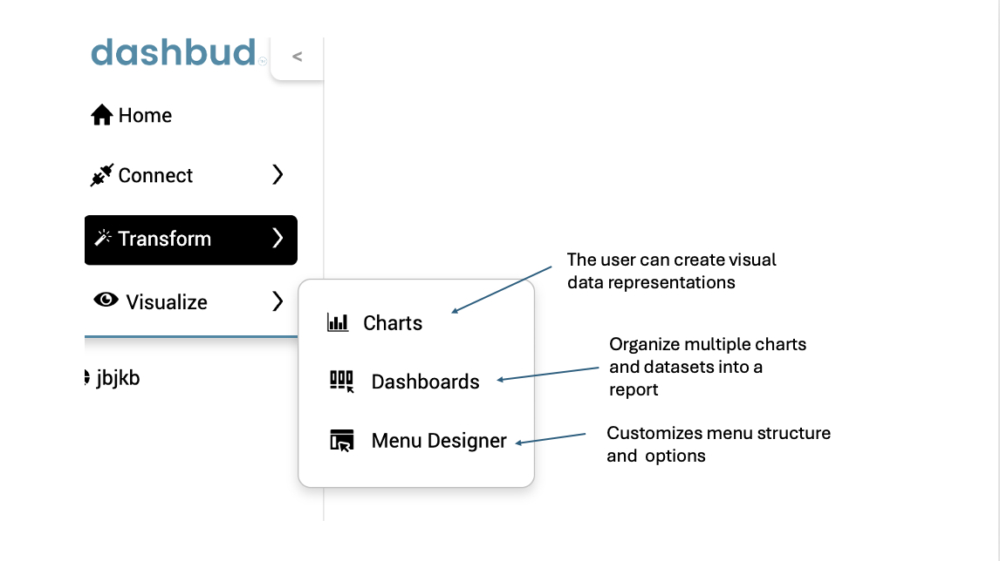

Welcome to the Dashbud Walkthrough
Dashbud is a powerful platform designed to help users manage, analyze, and visualize their data efficiently. This guide provides a step-by-step walkthrough of key features, including data import, AI-driven insights, and reporting tools. Navigate through the sections to explore each functionality in detail.
Connect
The Connect section allows users to set up database connections, import external data files, and define schemas for data processing.
Connection Strings enable secure and seamless integration with various databases. Users can configure authentication credentials and network settings to ensure smooth data retrieval.
Imports allow users to upload external files (such as CSVs) into the system. This functionality ensures that data from different sources can be brought into Dashbud for analysis and processing.
Blueprints define a structured schema for imported data. They help maintain consistency by enforcing data formats, column names, and relationships between different datasets.
Transform
The Transform section enables users to manage datasets, use AI for dataset generation, and refine data for analysis.
Datasets represent collections of structured data that users can organize, filter, and manipulate to extract insights. Users can clean and transform data before utilizing it in reports.
Conversations enable users to interact with Dashbud AI to generate insights, ask queries, and refine datasets based on contextual input. AI suggestions help uncover trends and automate data processing.
Visualize
The Visualize section allows users to create charts, dashboards, and customize menu structures for data representation.
Charts allow users to generate visual representations of datasets. Bar charts, line graphs, pie charts and more help identify trends and compare values.
Dashboards combine multiple charts and datasets into a single interactive view. They help users track key metrics and analyze data at a glance.
The Menu Designer lets users customize the navigation structure of their reports and dashboards. This feature improves accessibility and enhances the user experience.